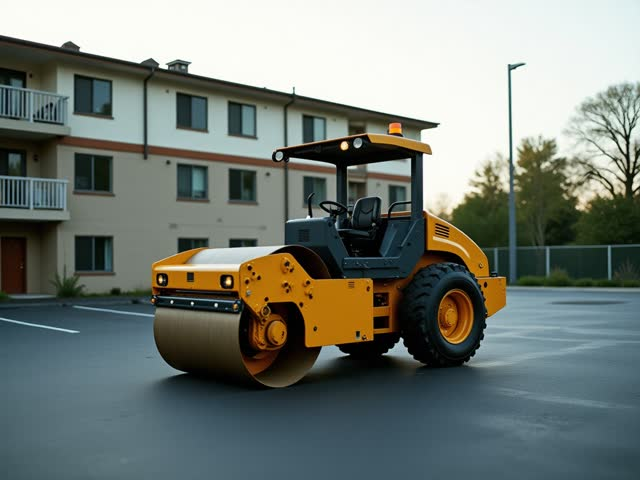

En çok kiralananTandem silindir 10 t11.000 TL/gün · operatörlü
Müsait makineyi görün, kiralama teklifini anında alın.
Kaydırın; dokununca o makinenin takvimi açılır.



Fiyatlar temsilîdir, KDV hariç.
Referanslar ve şantiye galerisi.
Makine → günler → ilçe · fiyat anında, 2 saat ayırtma
Asfalt tonajı ya da parke adedi.
İş türüne göre süzün.
Ayda 4 yeni yazı.
Fener Mah., Bülent Ecevit Blv. No:201, Muratpaşa / Antalya · Haritada aç
Dijitabela örneği · görseller, projeler ve fiyatlar temsilîdir.
360° GÖRÜNÜM
Görüntüyü fareyle ya da parmağınızla çevirin; bulunduğumuz sokağı ve girişimizi 360° gezin, gelirken zorlanmayın.
Görüntü: Google Street View · Yol tarifi al